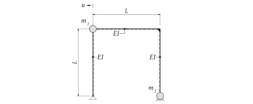
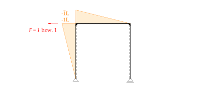
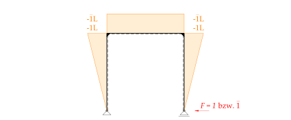
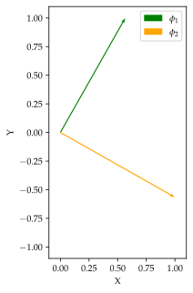
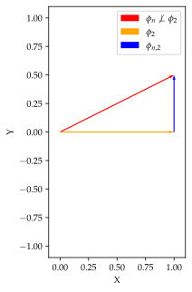
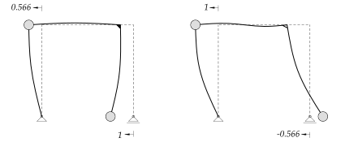

%run style_and_packages.ipynb12 Beispiel: Eigenvektoren und Nachgiebigkeitsmatrix
12.1 Aufgabenstellung
Das System in Abbildung 12.1 zeigt einen Rahmen, welcher als Zweimassenschwinger modelliert werden kann.

Gesucht:
Eigenkreisfrequenz \(\omega\)
Eigenformen - Normierung auf \[\phi_1^T = \begin{bmatrix} 1 & \\ \end{bmatrix} \] \[\phi_2^T = \begin{bmatrix} & 1 \\ \end{bmatrix}\]
Skizze der Eigenformen
Kontrolle der Orthogonalitätsbedingung
Gegeben:
- Dehnsteifigkeit aller Stäbe \(E\cdot A = \infty\)
omega, t, L, m_1, m_2, EI = sp.symbols('omega, t, L, m_1, m_2, EI')
omega_n = sp.symbols('omega_n')params = {EI: 20*10**12 *unit.N*unit.mm**2,
m_1:1000*unit.N*unit.second**2/unit.m,
m_2:1000*unit.N*unit.second**2/unit.m,
L:4*unit.m,
}
render.dict_to_table(params)| \(EI = 20000000000000 \text{mm}^{2} \text{N}\) | \(L = 4 \text{m}\) |
| \(m_{1} = \frac{1000 \text{N} \text{s}^{2}}{\text{m}}\) | \(m_{2} = \frac{1000 \text{N} \text{s}^{2}}{\text{m}}\) |
12.2 Musterlösung
12.2.1 Nachgiebigkeitsmatrix \(\mathbf{D}\)
Die Steifigkeitsmatrix lässt sich durch Invertierung der Nachgiebigkeitsmatrix beschreiben. Die Nachgiebigkeitsmatrix \(\mathbf{D}\) beschreibt die Deformation an einem Massenpunkt. Die Einträge der \(\mathbf{D}\) - Matrix beschreiben die Deformationen für unterschiedliche Laststellungen.
\[ \mathbf{K} = \mathbf{D^{-1}} \tag{12.1}\]
Für einen 2-Massenschwinger, wie in Abbildung 12.2 , hat die Nachgiebigkeitsmatrix folgende Form:
\[ \mathbf{D} = \frac{1}{EI}\cdot \begin{bmatrix} \delta_{11} & \delta_{12}\\ \delta_{21} & \delta_{22} \end{bmatrix} \tag{12.2}\]
wobei gilt:
\(\delta_{ab}\) : \(a\) ist die Lastsituation, \(b\) ist die Masse.
12.2.1.1 Anwendung

\[ \delta_{ab} = \frac{1}{EI}\int_{0}^{L} M_a\bar{M_b} \,dx \tag{12.3}\]
Es werden 2 Laststellungen betrachtet, jeweils an einem Massenpunkt. Dabei ist Beachtung der Einheit der Einwirkung zu schenken. Diese wird einheitslos angesetzt.

delta_11 = 1/(EI) * (sp.Rational(1,3) * -L*-L*1*L)* 2
delta_12 = 1/(EI) * ((sp.Rational(1,3) * -L*-L*1*L) + (sp.Rational(1,2) * -L*-L*1*L))
delta_21 = delta_12
delta_22 = 1/(EI) * ((sp.Rational(1,3) * -L*-L*1*L)* 2 + -L*-L*1*L)
render.eq_display('delta_11', delta_11,
'delta_12', delta_12,
'delta_21', delta_21,
'delta_22', delta_22)\[\begin{equation}\delta_{11} = \frac{2 L^{3}}{3 EI}\end{equation}\]
\[\begin{equation}\delta_{12} = \frac{5 L^{3}}{6 EI}\end{equation}\]
\[\begin{equation}\delta_{21} = \frac{5 L^{3}}{6 EI}\end{equation}\]
\[\begin{equation}\delta_{22} = \frac{5 L^{3}}{3 EI}\end{equation}\]
D = sp.Matrix([[delta_11, delta_12],[delta_21, delta_22]])
K = D.inv()
render.eq_display(sp.MatrixSymbol('D', 2,2), D,
sp.MatrixSymbol('K', 2,2), K)\[\begin{equation}\mathbf{D} = \left[\begin{matrix}\frac{2 L^{3}}{3 EI} & \frac{5 L^{3}}{6 EI}\\\frac{5 L^{3}}{6 EI} & \frac{5 L^{3}}{3 EI}\end{matrix}\right]\end{equation}\]
\[\begin{equation}\mathbf{K} = \left[\begin{matrix}\frac{4 EI}{L^{3}} & - \frac{2 EI}{L^{3}}\\- \frac{2 EI}{L^{3}} & \frac{8 EI}{5 L^{3}}\end{matrix}\right]\end{equation}\]
12.2.2 Eigenvektoren
Die Bewegungsgleichung für einen ungedämpften, frei schwingenden Mehrmassenschwinger lässt sich folgender massen aufstellen:
\[ \mathbf{M u''(t) + K u(t)} = 0 \tag{12.4}\]
Die Modale Analyse entkoppelt die Gleichungen, um diese unabhängig voneinander zu lösen.
12.2.2.1 Massenmatrix \(\mathbf{M}\)
M = sp.Matrix([[m_1,0],[0,m_2]])
render.eq_display(sp.MatrixSymbol('M',2,2), M)\[\begin{equation}\mathbf{M} = \left[\begin{matrix}m_{1} & 0\\0 & m_{2}\end{matrix}\right]\end{equation}\]
12.2.2.2 Eigenkreisfrequenzen
Bei einem Mehrmassenschwinger gibt es entsprechend den Freiheitsgraden Eigenkreisfrequenzen \(\omega_n\). Diese lassen sich anhand Gleichung 12.5 bestimmen:
\[ \det{[\mathbf{K}-\omega_n^2 \mathbf{M}]=0} \tag{12.5}\]
eq_omega = sp.det(K-omega_n**2*M)
omega_n_solve = sp.solve(eq_omega, omega_n)
omega_1 = omega_n_solve[1]
omega_2 = omega_n_solve[3]
render.eq_display('omega_1', omega_1.subs(params).simplify().evalf(3),
'omega_2', omega_2.subs(params).simplify().evalf(3))\[\begin{equation}\omega_{1} = \frac{12.1}{\text{s}}\end{equation}\]
\[\begin{equation}\omega_{2} = \frac{40.0}{\text{s}}\end{equation}\]
12.2.2.3 Eigenvektoren \(\phi\)
\[ \phi_n = \begin{bmatrix} \phi_{1n}\\ \phi_{2n} \end{bmatrix} \tag{12.6}\]
\[ [\mathbf{K}-\omega_n^2 \mathbf{M}]\cdot \begin{bmatrix} \phi_{1n}\\ \phi_{2n} \end{bmatrix} =0 \tag{12.7}\]
Dazu ist die entsprechende Normierung aus der Aufgabenstellung zu berücksichtigen. Generell gilt, den Vektor auf den Maximalwert zu normieren, bzw. diesen auf 1 zu setzen.
phi_11, phi_21, phi_12, phi_22 = sp.symbols('phi_11, phi_21, phi_12, phi_22')
params['phi_21'] = 1
phi_1 = sp.Matrix([[phi_11], [phi_21]])
phi_11 = list(sp.solve((K-omega_1**2 *M)*phi_1, phi_11).values())[0]
params['phi_11'] = phi_11.subs(params).simplify()
render.eq_display((K-omega_1**2 *M)*phi_1,sp.Matrix([[0],[0]]),
sp.MatrixSymbol('phi_1', 2,1),sp.simplify(phi_1.subs(params)).evalf(3))\[\begin{equation}\left[\begin{matrix}- \frac{2 EI \phi_{21}}{L^{3}} + \phi_{11} \cdot \left(\frac{4 EI}{L^{3}} - m_{1} \cdot \left(\frac{4 EI}{5 L^{3} m_{2}} + \frac{2 EI}{L^{3} m_{1}} - \frac{2 EI \sqrt{4 m_{1}^{2} + 5 m_{1} m_{2} + 25 m_{2}^{2}}}{5 L^{3} m_{1} m_{2}}\right)\right)\\- \frac{2 EI \phi_{11}}{L^{3}} + \phi_{21} \cdot \left(\frac{8 EI}{5 L^{3}} - m_{2} \cdot \left(\frac{4 EI}{5 L^{3} m_{2}} + \frac{2 EI}{L^{3} m_{1}} - \frac{2 EI \sqrt{4 m_{1}^{2} + 5 m_{1} m_{2} + 25 m_{2}^{2}}}{5 L^{3} m_{1} m_{2}}\right)\right)\end{matrix}\right] = \left[\begin{matrix}0\\0\end{matrix}\right]\end{equation}\]
\[\begin{equation}\mathbf{\phi}_{1} = \left[\begin{matrix}0.566\\1.0\end{matrix}\right]\end{equation}\]
params['phi_12'] = 1
phi_2 = sp.Matrix([[phi_12], [phi_22]])
phi_22 = list(sp.solve((K-omega_2**2 *M)*phi_2, phi_22).values())[0]
params['phi_22'] = phi_22.subs(params).simplify()
render.eq_display((K-omega_2**2 *M)*phi_2,sp.Matrix([[0],[0]]),
sp.MatrixSymbol('phi_2', 2,1),sp.simplify(phi_2.subs(params)).evalf(3))\[\begin{equation}\left[\begin{matrix}- \frac{2 EI \phi_{22}}{L^{3}} + \phi_{12} \cdot \left(\frac{4 EI}{L^{3}} - m_{1} \cdot \left(\frac{4 EI}{5 L^{3} m_{2}} + \frac{2 EI}{L^{3} m_{1}} + \frac{2 EI \sqrt{4 m_{1}^{2} + 5 m_{1} m_{2} + 25 m_{2}^{2}}}{5 L^{3} m_{1} m_{2}}\right)\right)\\- \frac{2 EI \phi_{12}}{L^{3}} + \phi_{22} \cdot \left(\frac{8 EI}{5 L^{3}} - m_{2} \cdot \left(\frac{4 EI}{5 L^{3} m_{2}} + \frac{2 EI}{L^{3} m_{1}} + \frac{2 EI \sqrt{4 m_{1}^{2} + 5 m_{1} m_{2} + 25 m_{2}^{2}}}{5 L^{3} m_{1} m_{2}}\right)\right)\end{matrix}\right] = \left[\begin{matrix}0\\0\end{matrix}\right]\end{equation}\]
\[\begin{equation}\mathbf{\phi}_{2} = \left[\begin{matrix}1.0\\-0.566\end{matrix}\right]\end{equation}\]
12.2.2.4 Orthogonalitätsbedingung
Um eine modale Analyse des Systems durchzuführen, gilt es die Orthogonalität der Eigenvektoren zu gewährleisten. Die Modale Analyse wird in folgenden Beispielen, wie in ?sec-tilger, angewendet.
Dies gilt es für die Massenmatrix zu kontrollieren:
render.eq_display(sp.MatrixSymbol('phi_1',2,1).T*sp.MatrixSymbol('M', 2,2)*sp.MatrixSymbol('phi_1',2,1),(phi_1.T*M*phi_1).subs(params).evalf(3),
sp.MatrixSymbol('phi_2',2,1).T*sp.MatrixSymbol('M', 2,2)*sp.MatrixSymbol('phi_2',2,1),(phi_2.T*M*phi_2).subs(params).evalf(3),
sp.MatrixSymbol('phi_2',2,1).T*sp.MatrixSymbol('M', 2,2)*sp.MatrixSymbol('phi_1',2,1),(phi_2.T*M*phi_1).subs(params).evalf(3),
sp.MatrixSymbol('phi_1',2,1).T*sp.MatrixSymbol('M', 2,2)*sp.MatrixSymbol('phi_2',2,1),(phi_1.T*M*phi_2).subs(params).evalf(3))\[\begin{equation}\mathbf{\phi}_{1}^{T} \mathbf{M} \mathbf{\phi}_{1} = \left[\begin{matrix}\frac{1.32 \cdot 10^{3} \text{N} \text{s}^{2}}{\text{m}}\end{matrix}\right]\end{equation}\]
\[\begin{equation}\mathbf{\phi}_{2}^{T} \mathbf{M} \mathbf{\phi}_{2} = \left[\begin{matrix}\frac{1.32 \cdot 10^{3} \text{N} \text{s}^{2}}{\text{m}}\end{matrix}\right]\end{equation}\]
\[\begin{equation}\mathbf{\phi}_{2}^{T} \mathbf{M} \mathbf{\phi}_{1} = \left[\begin{matrix}0\end{matrix}\right]\end{equation}\]
\[\begin{equation}\mathbf{\phi}_{1}^{T} \mathbf{M} \mathbf{\phi}_{2} = \left[\begin{matrix}0\end{matrix}\right]\end{equation}\]
Sowohl auch für die Steifigkeitsmatrix:
render.eq_display(sp.MatrixSymbol('phi_1',2,1).T*sp.MatrixSymbol('K', 2,2)*sp.MatrixSymbol('phi_1',2,1),sp.simplify((phi_1.T*K*phi_1).subs(params)).evalf(3),
sp.MatrixSymbol('phi_2',2,1).T*sp.MatrixSymbol('K', 2,2)*sp.MatrixSymbol('phi_2',2,1),sp.simplify((phi_2.T*K*phi_2).subs(params)).evalf(3),
sp.MatrixSymbol('phi_2',2,1).T*sp.MatrixSymbol('K', 2,2)*sp.MatrixSymbol('phi_1',2,1),sp.simplify((phi_2.T*K*phi_1).subs(params)).evalf(3),
sp.MatrixSymbol('phi_1',2,1).T*sp.MatrixSymbol('K', 2,2)*sp.MatrixSymbol('phi_2',2,1),sp.simplify((phi_1.T*K*phi_2).subs(params)).evalf(3))\[\begin{equation}\mathbf{\phi}_{1}^{T} \mathbf{K} \mathbf{\phi}_{1} = \left[\begin{matrix}\frac{1.93 \cdot 10^{5} \text{N}}{\text{m}}\end{matrix}\right]\end{equation}\]
\[\begin{equation}\mathbf{\phi}_{2}^{T} \mathbf{K} \mathbf{\phi}_{2} = \left[\begin{matrix}\frac{2.12 \cdot 10^{6} \text{N}}{\text{m}}\end{matrix}\right]\end{equation}\]
\[\begin{equation}\mathbf{\phi}_{2}^{T} \mathbf{K} \mathbf{\phi}_{1} = \left[\begin{matrix}0\end{matrix}\right]\end{equation}\]
\[\begin{equation}\mathbf{\phi}_{1}^{T} \mathbf{K} \mathbf{\phi}_{2} = \left[\begin{matrix}0\end{matrix}\right]\end{equation}\]
Die Orthogonalitätsbedingung ist erfüllt!
Zur effektiven Entkoppelung der Gleichungen muss die Orthogonalitätsbedingung eingehalten sein. Durch die Orthogonalität der Vektoren \(\phi_1\) und \(\phi_2\) kann mittels einem Einmassenschwingers sämtliches Verhalten von \(\phi_1\) beschrieben werden und mittels einem zweiten Einmassenschwinger sämtliches Verhalten von \(\phi_2\). Ist die Orthogonalität nicht gegeben, so müsste der erste Einmassenschwinger Anteile aus \(\phi_1\) und \(\phi_2\) beschreiben.
phi_1_x = [0,phi_1.subs(params)[0]]
phi_1_y = [0,phi_1.subs(params)[1]]
phi_2_x = [0,phi_2.subs(params)[0]]
phi_2_y = [0,phi_2.subs(params)[1]]# Define the vector
vector_phi_1 = np.array(phi_1.T.subs(params)).astype(np.float64)[0]
vector_phi_2 = np.array(phi_2.T.subs(params)).astype(np.float64)[0]
# Create a quiver plot
fig, ax = plt.subplots()
ax.quiver(0, 0, vector_phi_1[0], vector_phi_1[1], angles='xy', scale_units='xy', scale=1, color='green', label='$\phi_1$')
ax.quiver(0, 0, vector_phi_2[0], vector_phi_2[1], angles='xy', scale_units='xy', scale=1, color='orange', label='$\phi_2$')
# Set the axis limits
ax.set_xlim([-0.1, 1.1])
ax.set_ylim([-1.1, 1.1])
ax.set_aspect('equal')
ax.set_xlabel('X')
ax.set_ylabel('Y')
plt.legend()
plt.show()
## Zweiter Plot
# rotatet orthogonal vectors
v1 = np.array([0,1])
v2 = np.array([1,0])
# Define the non-orthogonal vectors
u1 = np.array([1., 0.5])
# Create a quiver plot
fig, ax = plt.subplots()
ax.quiver(0, 0, u1[0], u1[1], angles='xy', scale_units='xy', scale=1, color='red', label='$\phi_n \\not \\perp \phi_2$')
ax.quiver(0, 0, v2[0], v2[1], angles='xy', scale_units='xy', scale=1, color='orange', label='$\phi_2$')
ax.quiver(v2[0], v2[1], 0, u1[1], angles='xy', scale_units='xy', scale=1, color='blue', label='$\phi_{n,2}$')
# Add lines to show the decomposition of the non-orthogonal vector
# Set the axis limits
ax.set_xlim([-0.1, 1.1])
ax.set_ylim([-1.1, 1.1])
ax.set_aspect('equal')
ax.set_xlabel('X')
ax.set_ylabel('Y')
plt.legend()
plt.show()

Wie in Abbildung 12.5 dargestellt, wird der rote Vektor \(\phi_n\) durch den orangenen Vektor \(\phi_2\) beschrieben, sowie durch seine \(Y\) Komponente \(\phi_{n,2}\). Folglich steht \(\phi_n\) nicht orthogonal auf \(\phi_2\) und lässt sich nicht ohne \(\phi_2\) beschreiben. Die Entkoppelung ist nicht möglich.
Nebenbei, dies lässt sich für einen zweidimensionalen Fall, sprich Zweimassenschwinger darstellen. Das Verfahren kann auf beliebig viele Dimensionen erweitert werden, die Darstellung dieser ist jedoch nicht mehr möglich.
12.2.3 Eigenformen
